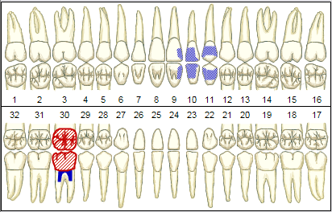

See Versions
Released on 1/5/05.
E-claims: Open Dental now generates E-Claims in X12 (HIPAA 837) format. This format is, in theory, accepted by ANY clearinghouse. No other dental software can directly generate X12 format; they instead depend on the clearinghouse to do this. X12 is also directly accepted by some insurance carriers, especially Medicaid and Blue Cross. The number of insurance carriers accepting X12 will increase every year, increasing your choices and options.
E-claims responses: 277U- Unsolicited Claim Status Notification. This is the simplest X12 format for getting a response from the clearinghouse on the status of claims recently sent. Usually available the following day. There are many other additional X12 formats that will follow in future versions including 835-Payments, 276/277-Claim status request/response, 270/271-Eligibility, and 277-Request for additional information.
Prosthesis fields: In the procedure edit window, you now have a place to put whether a crown, bridge, or denture is initial or replacement, and what the original placement date was. There is also a claim note box.
Language translations: Maintenance of the language translations features was made easier by adding a recursive function that automatically translates all buttons and labels on each form so it doesn't have to be done manually. Also, buttons resize automatically if text is too long. Also, the 255 character limit on translations has been removed. Various minor improvements made such as better handling of weekdays, and enabling translations of various listboxes.
Chart module: Shading on teeth for 3D appearance:

Recall: A recall table was added to the database, making due dates easily accessible and reporting more flexible. Directly print sheets of labels for recall. Directly print postcards in 3 different sizes with custom notes. More control over intervals, setting statuses, overriding due dates, keeping notes, etc.
Procedure Notes: Any procedure note can be locked, creating a legally tight patient record. The date that the note was locked will always show for future reference. Nobody can unlock it no matter what their permissions.
Miscellaneous:
Elimination of the discount feature from within a payment. It will be replaced by adjustment functionality.
Bridge to Sirona Sidexis Imaging
The Select Patient drop down list was refined slightly.
Changed behavior when double clicking on blank area of Appointments module.
Set date when quick add procedure in appointment.
Adding a new referral was streamlined and more features added to referrals.
Todays procedures highlighted in Progress Notes
Added an option to let multiple versions of the program run simultaneously for Windows terminal services.
Payment plans-fixed bug where the last payment was getting changed to $0 on subsequent openings.